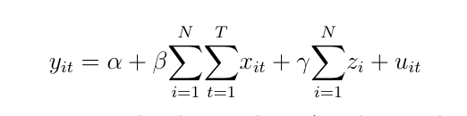

Project
Overview
Our Motivation
Given these companies' soaring ambition and rapid expansion, Uber and Lyft are not only reshaping the For-Hire Vehicles(FHV) market but also our urban agglomerations. However, some of the effects, for example, in the public transit system and city congestion, are suspected to be harmful to our cities. Due to the limited availability of Uber & Lyft trip data, most of these concerns have not been proven.
Our Goal
Hence, the project is designed to address one particular impact could be made by Uber & Lyft: whether daily Uber & Lyft trips affect parking violations in NYC. We decided to leverage the data science models on NYC parking ticket and Uber/Lyft trip dataset to explore the casual effect of Uber & Lyft rides on parking violations. We aims to use the project to help the public better understand the impact of Uber & Lyft and offer policy insight to the TNC regulation.

Project
Data
 |
||
NYC Uber & Lyft Trip Data |
NYC Parking Data |
Other Related NYC Data |
The dataset includes each Uber and Lyft trip from 2014 to 2018. We used NYC For-Hire Vehicle (FHV) data to extract the dataset, and use the variable, dispatching base number, to identify FHV companies. |
The dataset includes every parking ticket issued in New York from 2013 to 2019, and we only used data from 2014 to 2018. This dataset were obtained from NYC Open Data. |
Five additional datasets are included to be used for the DID model as clustering and predicting variable and for the Bayesian Network as potential causation of parking violation. |
Project
Methology
Three different models were applied to effectivly explain the casual effect of Uber/Lyft on NYC parking violations.
Firstly, a Bayesian Network was built to determine whether there is a casual effect; upon which, two advanced models, Fixed Effect, and Difference in Differences (DID) were introduced to explore the direction and strength of the causal effect.Due to Bayesian Network's ability to identify causation, we believe it is an effective tool to itially determine whether Uber & Lyft can directly or indirectly cause parking violations in NYC.
The key step for building a Bayesian Network is structure learning, which estimates a directed acyclic graph (DAG) that captures the dependencies between the variables given a set of data records. In this project, score-based structure learning and constraint-based structure learning algorithms were are used to learn the causal structure
Score-based Structure Learning construes model selection as an optimization task. It has two building blocks: first apply a 'scoring function' that maps models to a numerical score, based on how well they fit to a given data set; second perform 'search strategy' to traverse the search space of possible models and select a model with optimal score.
Constraint-based Structure Learning attempts to capture the directionality of causal relationships correctly. It has two building blocks: identifying independencies in the data set using hypothesis tests and constructing a DAG according to identified independencies.
Fixed effects model (FEM) is widely used to control for the effect of unobserved variables when performing causal inference with panel data, so it fits our project well. To develop a FEM, dummy variables of each taxi zone is added to a standard OLS model to evaluate the fixed effects of the number of Uber & Lyft trips across different taxi cab zones. Considering the model for taxi zones i = 1, ...... , N which is observed at certain time periods t = 1, ...... , T:
where Yit and Xit are, respectively, the number of parking tickets (dependent variable) and the number of Uber & Lyft trips (independent variables) in the i-th taxi zone at time t; Zi are unobserved, time-invariant dummy variables in different taxi zones; β and γ represent coefficients of the independent variables and dummy variables; α and uit refers to the intercept and the error term. The coefficient, β , of the independent variables would indicate the causal effect exerted by Uber & Lyft trips on parking violations.
Within the framework of natural science, two identical NYCs, one having TNC companies operating the other not, were needed to strictly prove the causal effect of Uber & Lyft on parking violations. However, such ideal 'treatment groups' and 'control groups' were impossible to be found or developed in social science research. Consequently, DID model was applied in this project to solve this problem. The Figure below shows the general idea of DID and how it works.
The 'treatment object' and 'control object', P and S, have status P1 and S1 on time period 1, and status P2 and S2 on time period 2. Based on the DID's most critical assumption, parallel trend assumption, that any existing factor would have same effect on P and S, shown by the parallel S1 to S2 line and P1 to Q dotted line DID, the difference between Q and S2 on the second time period equals the difference between P1 and S1 on the first time period, and the difference between P2 and Q represents the effect of the outside factor or treatment.
For this project, to fulfill DID's parallel trend assumption, cross-clustering was applied to find paris of multi-dimensionally homogeneous taxi zones, which can be used as 'treatment group' and 'control group'. Because the Uber & Lyft trip data demonstrated that the effect of ridesharing cars became noticeable since 2015, the parking violation data before 2015 and other related socio-economic, demographic, and facility data of taxi zones were taken into clustering to identify homogeneous taxi zones.
Results &
Conclusions
Based on the results of the three models, we can conclude that Uber & Lyft is able to reduce parking violation in NYC.
So, in this aspect, Uber & Lyft is beneficial to NYC, and potentially to other major cities in the world. However, we still have not clearly determine how strong the effect is, and this question can be a further improvement of our project.
With millions of users in the world, Uber & Lyft has far-reaching impacts; some yet to be identified and explored. This project serves as an example to apply machine learning methods on the available data to study and prove un-noticed yet potential effects of ride-share companies on cities.
Uber & Lyft has a direct impact on parking tickets
According to the above figure, there are four variables that directly impact parking ticket: Meter Parking Capacity, Parking Lot Capacity, Misdemeanor Crime Rate and Number of Uber & Lyft trips. However, Bayesian Network cannot tell us whether the impact is positive or negative and how strong the impact is.
Uber & Lyft are reducing NYC parking violation but the effect is not significant
The fixed effects model (FEM) controls for the unobserved factors. According to Figure above, the coefficient of Uber & Lyft trips (pickup) is -0.0007, indicating Uber \& Lyft trips reduces NYC parking violation slightly. However, this modeled relationship is not statistically significant, because the p-value of 0.677, is much larger than the significance level, 0.05, making the result of FEM less reliable.
Uber & Lyft is able to reduce NYC parking violation significantly
The figure above shows Flatiron and Midtown Center were identified as a pair of highly homogenous taxi zones, and, in total, 900 pairs (2.7% of all possible pairs) are determined by the DID model. Based on these pairs, the DID model gave an average causal effect intensity of 224.2, which implies that an increase of 224.2 Uber & Lyft pickups is associated with a decrease of 1 parking ticket.
About
Us
Our Team
- The Project is completed by 5 master students at NYU Center for Urban Science + Progress
| Junru Lu | Junjie Cai | Pranay Anchan | Shijia Gu | Yuxuan Wang |
Our Sponsor
- The Project is sponsored and guided by Professor Guo Zhan from NYU Wagner School of Public Service
 |
|
| NYU Wagner | Prof. Zhan Guo |